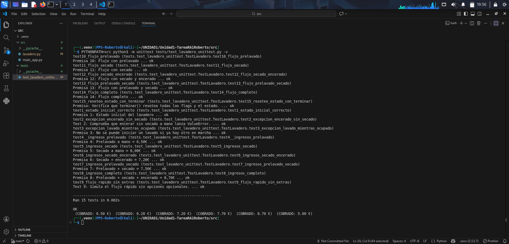

Pruebas unitarias de la aplicación Lavadero
En este apartado se documenta el diseño, implementación y ejecución de las pruebas unitarias realizadas sobre la aplicación Lavadero, con el objetivo de verificar el correcto funcionamiento de los requisitos definidos en el enunciado de la actividad.
Las pruebas se han implementado utilizando el módulo Unittest de Python.
1. Objetivo de las pruebas
El objetivo principal de las pruebas unitarias es:
- Verificar el estado inicial del lavadero.
- Comprobar que se lanzan excepciones cuando se incumplen las reglas de negocio.
- Validar el cálculo correcto de los ingresos según las opciones seleccionadas.
- Comprobar el flujo de fases del lavadero en todos los escenarios posibles.
- Detectar errores en la lógica interna del programa para su posterior corrección.
Cada test se corresponde directamente con una premisa del enunciado.
2. Preparación del entorno de pruebas
Las pruebas se encuentran en la carpeta tests del proyecto y utilizan la siguiente estructura:
tests/
└── test_lavadero_unittest.py
3. Fallos detectados y soluciones aplicadas
- Método incorrecto en la clase Lavadero
- Problema: Se llamaba al método
_hacer_lavadoen lugar dehacerLavado. -
Solución: Cambiar la llamada a
self.lavadero.hacerLavado(...). -
Test 3
- Problema: Se lanzaba
ValueErrorcuando debía serRuntimeError. -
Solución: Sustituir la excepción por
RuntimeError. -
Test 5
- Problema: Los ingresos esperados eran
6, pero el cálculo correcto es6.20. - Explicación: El coste inicial de lavado es
5.00y el coste adicional es1.20según el método_cobrar. -
Solución: Cambiar ingresos esperados de
6a6.20. -
Test 7
- Problema: Los ingresos esperados eran
7.50. - Explicación: Con prelavado a mano (
1.50) y secado a mano (1.20), el total correcto es7.70. -
Solución: Cambiar ingresos esperados de
7.50a7.70. -
Clase Lavadero – método
ejecutar_y_obtener_fases - Problema: El método estaba fuera de la clase por falta de tabulación.
-
Solución: Añadir la indentación correcta para que el método quede dentro de la clase
Lavadero. -
Test 9
- Problema:
fases_esperadas = [0, 1, 3, 4, 5, 6, 0]. -
Solución: Cambiar a
fases_esperadas = [0, 1, 3, 4, 5, 7, 0]. -
Test 10
- Problema:
fases_esperadas = [0, 1, 2, 3, 4, 5, 6, 0]. -
Solución: Cambiar a
fases_esperadas = [0, 1, 2, 3, 4, 5, 7, 0]. -
Test 11
- Problema:
fases_esperadas = [0, 1, 3, 4, 5, 7, 0]. -
Solución: Cambiar a
fases_esperadas = [0, 1, 3, 4, 5, 6, 0]. -
Test 12
- Problema:
fases_esperadas = [0, 1, 3, 4, 5, 7, 8, 0]. -
Solución: Cambiar a
fases_esperadas = [0, 1, 3, 4, 5, 6, 0]. -
Test 13
- Problema:
fases_esperadas = [0, 1, 2, 3, 4, 5, 7, 0]. - Solución: Cambiar a
fases_esperadas = [0, 1, 2, 3, 4, 5, 6, 0].
- Problema:
-
Test 14
- Problema:
fases_esperadas = [0, 1, 2, 3, 4, 5, 7, 8, 0]. - Solución: Cambiar a
fases_esperadas = [0, 1, 2, 3, 4, 5, 6, 0].
- Problema:
-
Test 15
- Problema: Se llamaba a
self.lavadero.hacerLavado(False, False, True). - Explicación: No se puede encerar el coche sin haber realizado el secado a mano.
- Solución: Cambiar a
self.lavadero.hacerLavado(False, True, True).
- Problema: Se llamaba a
4. Ejecución de test sin fallos
